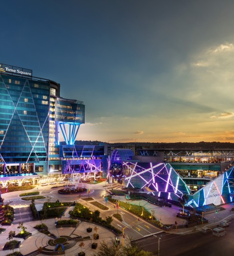

<!--
  Generated template for the DashboardPage page.

  See http://ionicframework.com/docs/components/#navigation for more info on
  Ionic pages and navigation.
-->


<ion-content class='has-header'>
  
  <div class='category-wrapper'>
    <ion-scroll class='top-ion-scroll' scrollX='true'>    
      <ion-item class="category" *ngFor='let category of dash$.categories'>
        <button ion-button icon-only large (click)='filterPollsByCategory(category)'>
            <ion-icon name='star'></ion-icon>
        </button><br>
        <p>{{category}}</p>
      </ion-item>
    </ion-scroll>
  </div>
      
  
  <div class='pollList'>
    <div >
      <ion-item text-wrap class='pollPreview' *ngFor='let poll of dash$.displayedPolls' (click)="goToPoll()">
        
        <!--  -->
        <h2>{{poll.pollTitle}}</h2>
        <p>{{poll.pollDescription}}</p>
      </ion-item>
      <ion-infinite-scroll (ionInfinite)="dash$.doInfinite($event)">
        <ion-infinite-scroll-content></ion-infinite-scroll-content>
      </ion-infinite-scroll>
    </div>
  </div>

  
</ion-content>

<ion-footer>
  <ion-toolbar>
    <ion-segment >
      <ion-segment-button value='Home' (click)='goToHome()'>
        Home
      </ion-segment-button>
      <ion-segment-button value='Create' (click)='goToCreate()'>
        Create
      </ion-segment-button>
      <ion-segment-button value='MyPolls'(click)='goToMyPolls()'>
        My Polls
      </ion-segment-button>
    </ion-segment>
  </ion-toolbar>
</ion-footer>
